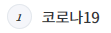
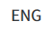
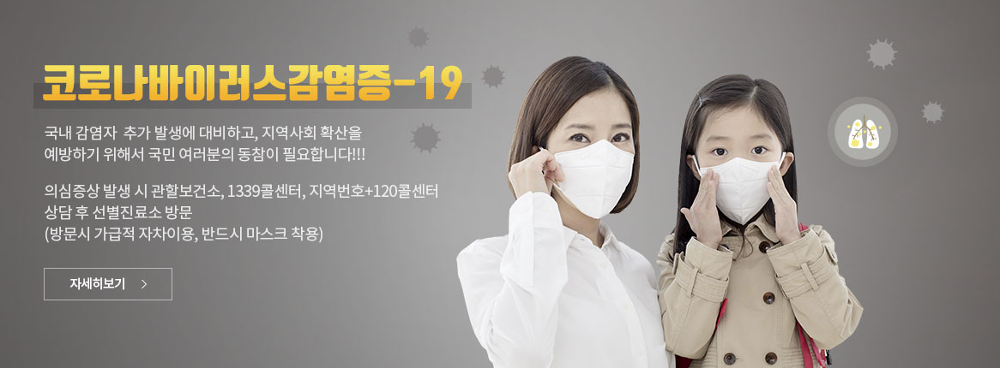
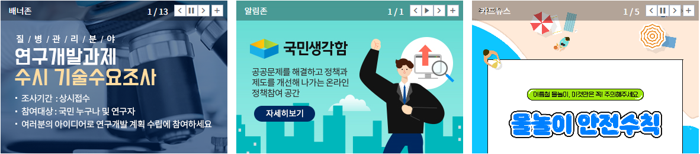
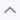

인기키워드
1 코로나19
2 자가격리
3 메르스
4 코로나19예방수칙
5 예방접종
6 사회적거리두기
7 대응지침
8 손씻기
9 마스크
10 여름철감염병

로그인 | 회원가입 |
마이페이지
| 고객센터
감염병
감염병정보
해외감염정보
· 해외감염병NOW
· 예방접종정보
· 해외여행건강정보
· 검역관리
감염병유행정보
결핵
예방접종
감염병간행물
건강정보
손상정보
교통사고
어린이손상
익수
자해/지실
직업손상
질식
추락/낙상
폭력/타살
화상
국가건강정보포털
희귀질환정보
정책정보
감염병
생물안전
만성질환
기후변화
의료방사선안전관리
장기·조직·혈액관리
연구개발
질병연구
· 질병연구
· 범부처감염병대응R&D
· 수시기술수요조사
연구성과
연구지원인프라
생명윤리
알림·자료
이달의건강소식
보도자료
포토뉴스
홍보자료
· 카드뉴스
· 홍보지
· 영상자료
· 라디오음원
· 교육자료
공지사항
공고/공시
채용공고
법령·지침·서식
· 법령
· 지침
· 서식
간행물·통계
간행물
· 주간건강과질병
· 감염병뉴스레터
· 지역사회건강과질병
· 손상예방과건강한안전사회
· 혈액소식지
· 오송 PHRP
· 질병관리백서
· 국립보건연구원연보
· NIH매거진
통계
· 감염병발생정보
· 감염병연보
· 건강통계
연구성과
민원·정보공개
1339콜센터
민원신청
나의민원확인
생명윤리법관련민원안내
사전정보공표
정보공개청구
공공데이터
기관업무추진비
공무국외여행보고서
기관소개*
소개
· 인사말
· 약력
비전과미션
핵심사업
연혁
조직·직원찾기
기관상징
오시는길
시설안내
누리집이용안내
· 이용안내
· 사이트맵
· 개인정보처리방침
· 웹접근성품질인증
· 저작권정책
· 메인배너
· 알림존
사업별홈페이지
감염병포털
예방접종도우미
해외감염병NOW
국립검역소
KISED
결핵제로
국가건강정보포털
희귀질환헬프라인
국민건강영양조사
지역사회건강조사
청소년건강형태조사
국립장기조직혈액관리원
프리온질환저해물질
국립의과학지식센터
오송PHTP
임상연구정보서비스
임상연구관리시스템
임상유전체생명정보
줄기세포주등록정보
One Health AMR 포털시스템
국립중앙인체자원은행
국가병원체자원은행

온열질환 건강수칙
비브리오패혈증 예방수칙
진드기 매개 감염병
코로나19 영상자료
국가별 질병정보
홍보자료
간행물·통계
조직도·직원찾기
법령·지침·서식
공고/공시
보도자료
공지사항
채용공고
주간건강과 질병
코로나바이러스감염증-19 국내 발생…
코로나바이러스감염증-19 국내 발생 현황 (7월 12일) 질병관리본부 중앙방역대책본부(본부장 전은경)는 7월 12일 0시 기준으로, 국내 발생 신규 확진자는 21명이 확인되.....
2020-07-12
· 코로나바이러스감염증-19국내발생현황(7월...
· 코로나바이러스감염증-19국내발생현황(7월...
· 코로나바이러스감염증-19국내발생현황(7월...
· 베트남 디프테리아 유행에 따른 예방접종 등 당부
감염병정보
건강정보
손상정보
ㄱ
ㄴ
ㄷ
ㄹ
ㅁ
ㅂ
ㅅ
ㅇ
ㅈ
ㅊ
ㅋ
ㅌ
ㅍ
ㅎ
메르스
인플루엔자
지카바이러스
결핵
노로바이러스
A형감염
더보기+

질병 관련 정보를
국민여러분께 신속히 제공하겠습니다
국가공중보건관리 중추기관으로서 국민 건강을 증진하고, 전문성·혁신·소통·신뢰를 기반으로 24시간 365일 최선을 다하겠습니다.
진짜 힘은 손 씻을 때 생긴다!
마블 콜라보 질병 예방 캠페인
중동지역을 방문하셨나요?
메르스 의심증상 발생시 1339
기침예절 지켜요!
기침예절은 감염병 예방의 기본수칙
1339 질병관리본부 콜센터
질병정보 궁금할 때 감염병이 의심될 때
관련링크< >
임상진료지침디지털가이드라인
KoGES
질병관리본부국제학술지(OsongPHRP)
만성신장병코호트연구
국민건강영양조사
국립의과학지식센터
보건복지통계
질병관리본부 관련기관 
보건환경연구원
보건복지부 및 소속기관
보건복지부 산화기관